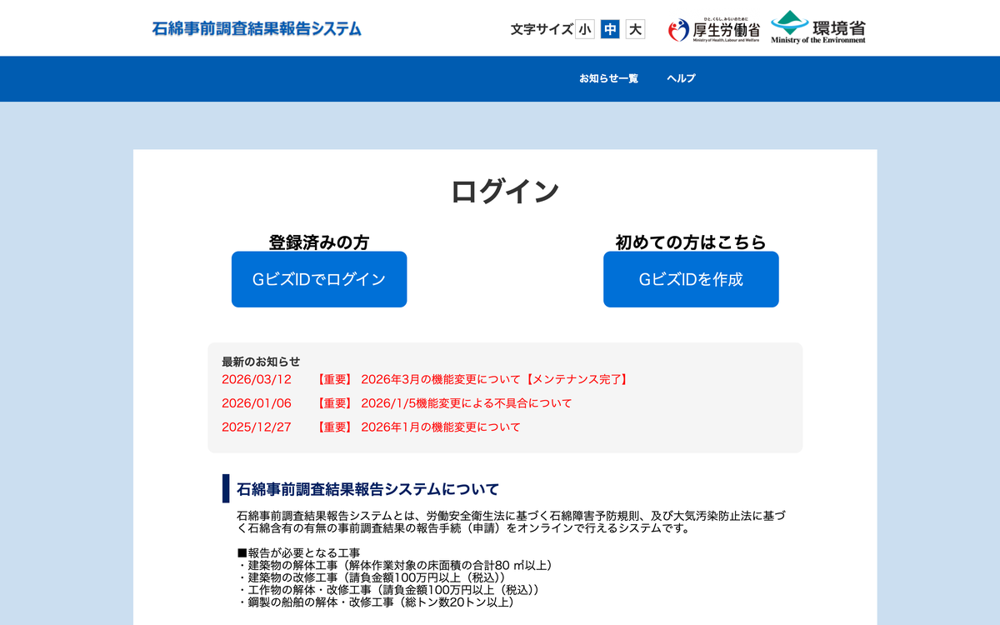
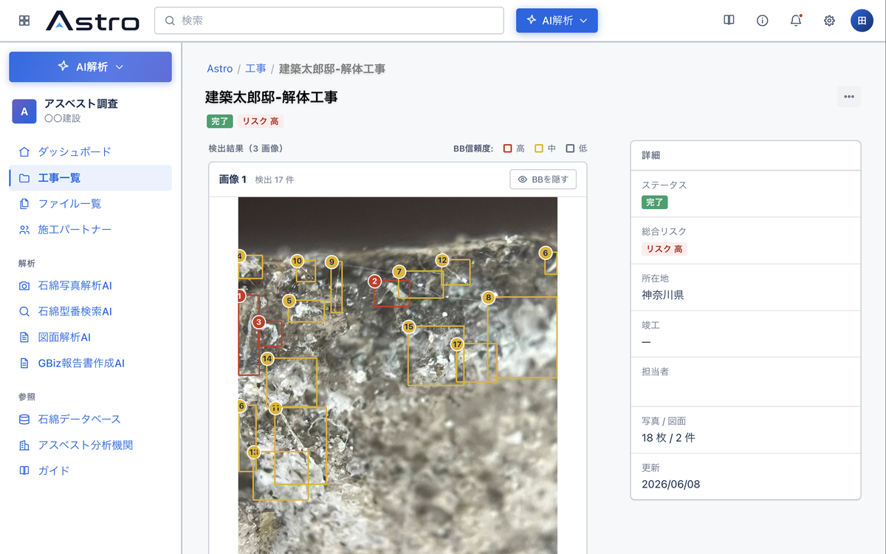
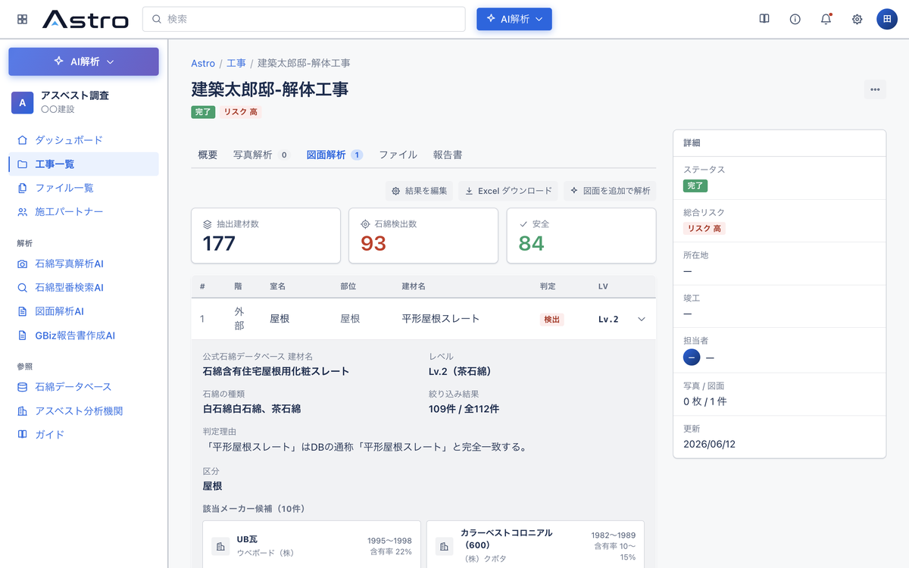
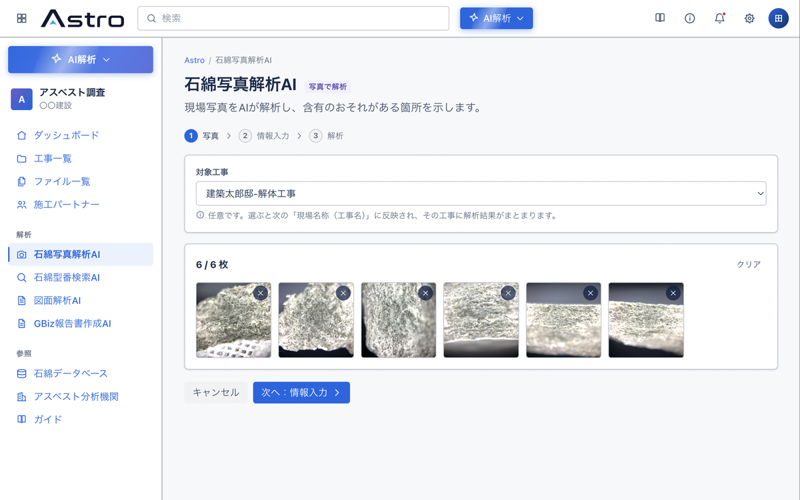
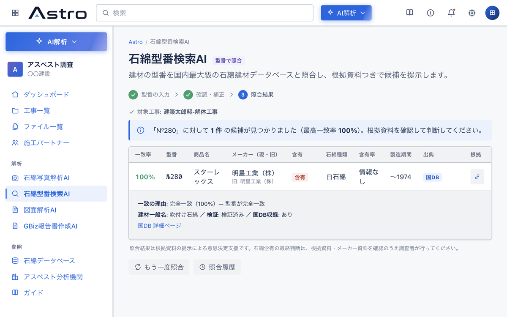
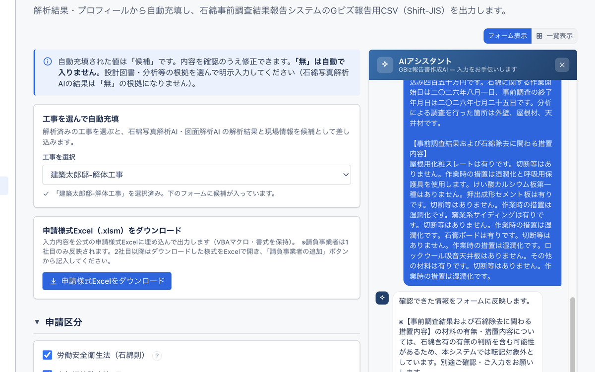
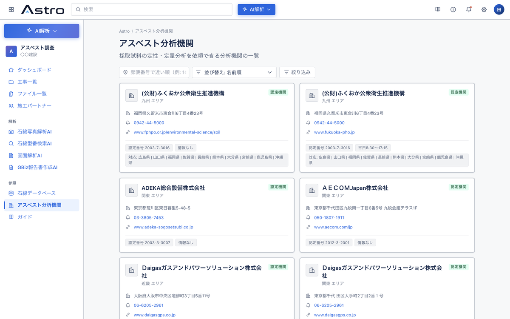
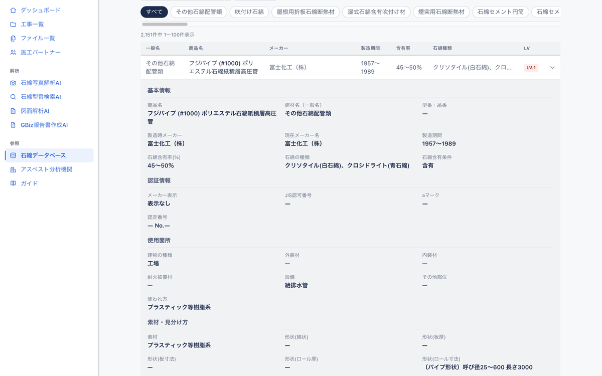

About Astro
アスベスト事前調査のすべての工程を、根拠あるAIとワンストップで効率化します。
3工程を1つのサービスで完結。図面解析の結果は目視調査に、目視の結果は報告書に、そのまま引き継がれます。転記の手間もミスもありません。

判定には、石綿DB・メーカー資料に基づく根拠とリスクレベルを必ず併記。なぜその判定なのかがその場でわかり、最終判断を下す有資格者を支えます。
事務所ではPC、現場ではスマホ。同じ現場データにどこからでもアクセスでき、電波のない現場でもオフラインで撮影・保存できます。
Experience
4つのAIを選ぶと、実際の操作画面の録画をご覧いただけます。
Problem
アスベスト事前調査の現場では、こんな声をよく耳にします。
調査対応が増えて、すぐに工事へ入れない。古い書面の確認で見積提出がいつも遅れる…
現場監督
解体工事会社
調査・分析・報告書のコストが利益を圧迫。有資格者の確保や教育にも費用がかかる…
経営者
建設・リフォーム会社
図面がない・古い・現況と違う。担当者によって調査品質がばらつくのが不安…
調査担当者
調査会社
Results
図面の書き起こし・DB照合から報告書作成までをAIが自動化。
調査時間だけでなく、分析依頼にかかる費用まで削減します。
※ 月間9現場・1現場8検体の解体業者モデルでの試算（人件費 日当2万円・分析依頼料 1検体3万円で算定、Astro月額利用料は含みません）。
※ 導入効果はお客様の現場条件により異なります。
Advantage
Astroが出すのは、数字の根拠まで示せる見積。
発注者への説明がそのまま提案力になります。
御 見 積 書
○○建設 株式会社 御中
件名：△△ビル解体工事に伴うアスベスト事前調査
見積No. 26-0719
2026年7月19日
御見積金額
¥384,000
（税抜・最大検体数での御見積）
※ 検体数は書面調査の結果により確定します。 ※ 出張交通費は別途申し受けます。
POINT
1
石綿DB照合の結果から採取が必要な建材を特定。「なぜこの本数か」まで説明できます。
POINT
2
国の石綿DB 44分類・2,151件とメーカー資料に基づく裏付けを、見積と一緒に提出できます。
POINT
3
従来2〜3日かかった見積準備が当日に。スピードと根拠の両方で失注を防ぎます。
Features
石綿事前調査の業務が、これひとつで完了します。
仕上表等の図面PDFをアップするだけで、AIが対象建材を自動で抽出
現場で撮った断面写真から、石綿含有のおそれを約30秒で判定
建材の型番を入力するだけで、該当するメーカー資料をその場で表示
調査結果を取り込むだけで、報告様式の記載内容を自動で作成
行政への事前調査結果の電子報告（Gビズ）に対応。申請用CSVのアップロードだけで完了
国の石綿含有建材データベースを横断検索。含有率や製造期間もその場で確認可能
検体の定性・定量分析を依頼できる機関を、地域や条件から検索可能
図面解析の結果から、石綿採取計画表をExcel形式で自動出力
図面・写真・解析結果・報告書類が工事毎に集約されるので、引き継ぎも簡単
スマホ操作が可能なので、現場からでも撮影・解析・確認が可能
メンバー毎に権限を設定でき、会社単位でデータを安全に分離
解析の完了や確認依頼をメールとアプリに即時通知するので、現場でも見逃さない
All-in-One
書面調査から報告・申請まで、8つの機能をひとつのサービスで。
01電子報告
申請用CSVをGビズにアップロードするだけ。すぐに完了。
Astroが出力する申請用CSVは、行政の電子報告（GビズID）の様式に対応。作成した報告内容をそのままアップロードするだけで、事前調査結果の報告がすぐに完了します。様式の転記作業はもう必要ありません。

02工事管理
図面・写真・解析結果・報告書類を、工事ごとにまとめて管理。
工事ごとに調査に関わる資料と結果を集約。複数現場の進捗も一覧で把握でき、担当者間の引き継ぎや本社からの確認もスムーズです。

03書面調査
図面PDFから建材を自動抽出し、石綿DBと照合。
仕上表などの図面PDFをアップロードするだけで、AIが建材を拾い出し、石綿含有建材データベースと自動照合。メーカー情報まで統合し、石綿採取計画表のExcel出力まで一気通貫で行えます。

04目視調査
現場写真から、石綿含有のおそれをその場で判定。
スマホで撮影した建材の断面写真をアップロードすると、独自AIが石綿含有のおそれを判定（建材スクリーニング）。分析機関に出す検体の絞り込みに役立ち、分析費用の削減につながります。

05建材特定
建材の型番から、メーカー資料を即表示。
図面や現場で確認した型番を入力するだけで、該当するメーカー資料をすぐに表示。目視調査中の建材特定を高速化し、判定の根拠資料もその場で揃います。

06報告・申請
調査結果から、国の報告様式と申請用CSVを自動作成。
図面や調査結果を取り込むと、AIが報告様式の記載内容を候補として提示。問題なければ一括反映、不足情報はチャットで補足するだけで、行政報告資料と申請用CSVが完成します。

07分析機関検索
検体の分析先を、地域や条件からすぐに探せる。
検体の定性・定量分析を依頼できる分析機関を、地域や対応条件から検索。調査から分析依頼までの流れがAstroの中で完結します。

08データベース検索
国の石綿DB 44分類・2,151件を横断検索。
建材名・メーカー名などから国の石綿含有建材データベースを検索。含有率や製造期間といった判定の根拠となる情報を、その場で確認できます。
